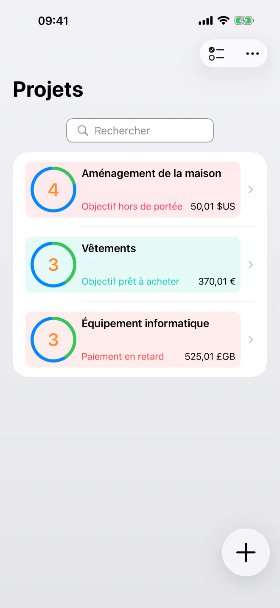
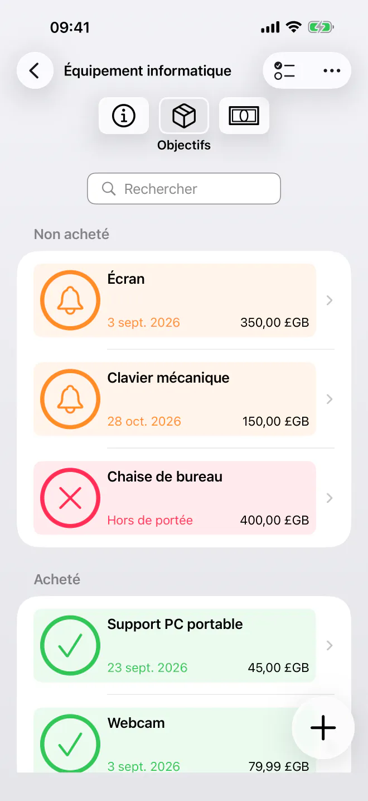
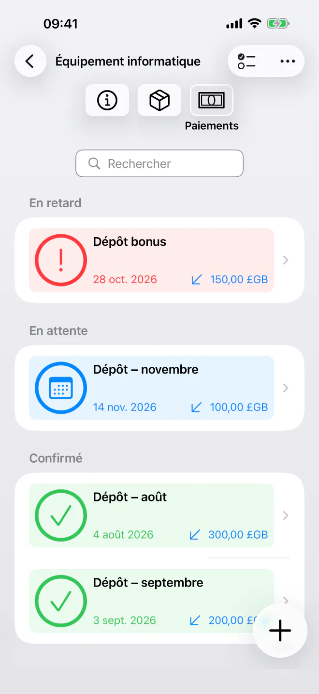
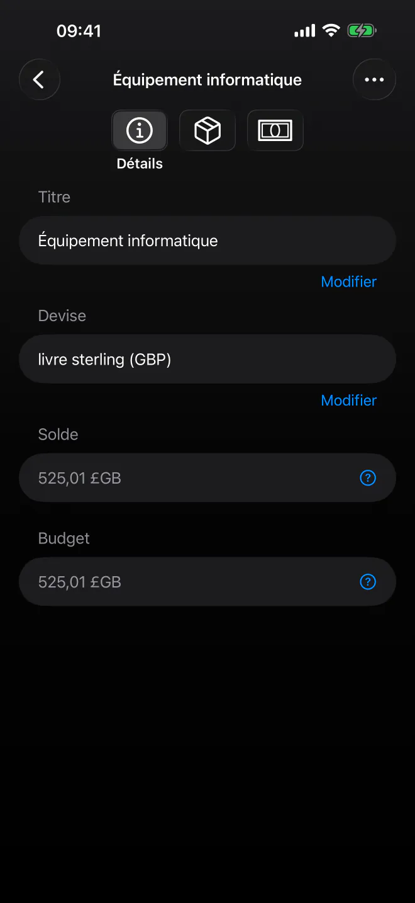

Sachez exactement quand vous pouvez acheter
Priorisez vos objectifs d’épargne et voyez la date la plus proche pour vous offrir chaque achat. Planification simple et privée à chronologie automatique. Sans compte.


Cessez de deviner quand vous pourrez enfin acheter le prochain article de votre liste. BudgetBear est une application simple et privée qui transforme vos objectifs en une chronologie d’achats claire. Ajoutez vos objectifs, définissez vos priorités et planifiez vos dépôts, le tout dans une interface calme et épurée qui respecte votre vie privée.
Prêt à commencer à planifier vos achats ? Téléchargez BudgetBear dès aujourd’hui.
Pourquoi choisir BudgetBear
- 100 % privé et sous votre contrôle — Vos données financières restent uniquement sur votre appareil. Aucun compte spécifique, aucun serveur tiers et aucune inscription dans le cloud, jamais.
- Minimaliste et ciblé — Une interface rapide et facile à utiliser, centrée sur l’essentiel. Sans désordre ni complexité inutile.
- Sachez exactement quand vous pouvez acheter — BudgetBear calcule la date la plus proche à laquelle vous pouvez vous offrir chaque objectif, pour que vous n’ayez plus jamais à deviner.
- Conçu autour des priorités — Combinez vos priorités et vos paiements planifiés pour transformer votre plan d’épargne en une date d’achat réaliste pour chaque objectif.
Transformez vos priorités en date d’achat
Prenez le contrôle de vos dépenses à long terme et de vos objectifs d’épargne grâce à un système conçu pour la clarté.
Listes d’envies par priorité
Ajoutez des articles cibles (objectifs) avec des prix estimés et faites-les glisser dans l’ordre exact que vous préférez.
Calcul dynamique de la chronologie
Voyez vos dates d’achat se mettre à jour instantanément lorsque vous modifiez des prix, ajoutez des dépôts ou changez l’ordre de vos objectifs.
Flux d’argent flexibles
Ajoutez des dépôts ponctuels pour réalimenter vos budgets ou enregistrez des retraits si vous décidez de dépenser l’argent ailleurs.
Paiements planifiés
Créez des plans récurrents de dépôts ou de retraits avec une date de fin (par ex. un mardi sur deux ou le jour de la paie) pour que votre chronologie reste automatisée.

Fonctionnalités clés pour vos objectifs d’épargne
- Projets d’épargne par priorité — Regroupez les objectifs liés dans des projets dédiés pour les voyages, l’électronique, l’amélioration de l’habitat ou les réserves d’urgence.
- Versement intelligent — L’argent est dirigé automatiquement vers votre objectif prioritaire jusqu’à ce qu’il soit entièrement financé, puis passe au suivant.
- Simple et minimaliste — Une interface épurée et sans distraction, pensée pour une saisie rapide, sans superflu ni menus compliqués.
- Répétitions avec date de fin — Définissez des dates de début et de fin ainsi que des intervalles pour vos contributions périodiques, sans règles compliquées.
Usages polyvalents pour votre épargne
Des cagnottes dédiées aux achats importants, BudgetBear s’adapte à vos objectifs.
Cagnottes dédiées
Mettez de l’argent de côté pour des dépenses futures connues, comme les primes d’assurance, les achats des fêtes ou l’entretien de la voiture.
Listes d’envies par priorité
Organisez ce que vous voulez acheter ensuite et voyez de combien un nouveau dépôt rapproche votre date d’achat.
Achats importants
Répartissez les gros achats en contributions périodiques raisonnables et regardez votre chronologie se raccourcir au fil du temps.

Confidentialité dès la conception
Sans abonnement. Sans traceur. Sans compte spécifique.
BudgetBear conserve tout en local : rien n’est envoyé, synchronisé ni partagé avec qui que ce soit. Vos objectifs et vos données budgétaires ne quittent jamais votre appareil.
Commencez gratuitement avec jusqu’à 3 projets. Avec un achat unique, Pro débloque un nombre illimité de projets, sans abonnement, jamais.
Clair et efficace
Que vous économisiez pour des vacances ou un nouvel appareil, ou que vous constituiez un fonds d’urgence, BudgetBear est votre compagnon fiable pour transformer vos objectifs d’épargne en dates d’achat concrètes. Simple, privé et sans abonnement.
Les meilleurs outils de productivité se font oublier pour vous laisser vous concentrer. C’est BudgetBear : aucune fonction inutile, aucune interface envahissante, juste une chronologie claire pour vos objectifs.